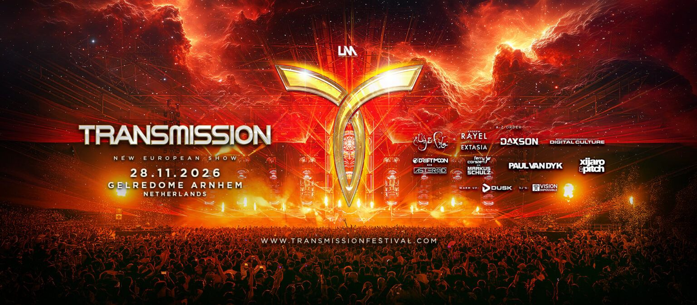

TRANCE
MUSIC
ADDICTED
Polska społeczność fanów muzyki trance
🔔
👥
☰
TMA • 144K FOLLOWERS
TRANCE IS FOR THE DREAMERS
Od 16 lat z pasją promujemy muzykę trance, wydarzenia i artystów w Polsce i na świecie. Odkryj nasz świat!
⭐ Zostań Subskrybentem VIP
🗓️ EVENT RADAR
🔥 RESISTANCE POLAND
Ergo Arena
Gdańsk / Sopot
Gdańsk / Sopot

10 PAŹDZIERNIKA 2026
48 : 12
DNIGODZ.MIN.
STATUS:
Bilety w sprzedaży!
⚡ TRANSMISSION FESTIVAL
Gelredome
Arnhem
Arnhem

28 LISTOPADA 2026
96 : 39
DNIGODZ.MIN.
LINE-UP:
Paul van Dyk, Daxson, Markus Schulz
▶️ AUDIO & MEDIA HUB
🔴 WYWIAD: ARMIN VAN BUUREN
Exclusive Interview: ARMIN VAN BUUREN on ASOT, Fans & What’s Next! Polska ekipa TMA w akcji.
🎵 WYWIAD: RUBEN DE RONDE
25 Years of A State of Trance & New Music! Nasz wywiad z Rubenem de Ronde.
Community
Ludzie. Pasja.
Wywiady
Artyści. Historie.
Muzyka
Sety. Klasyki.
Eventy
Kalendarz.